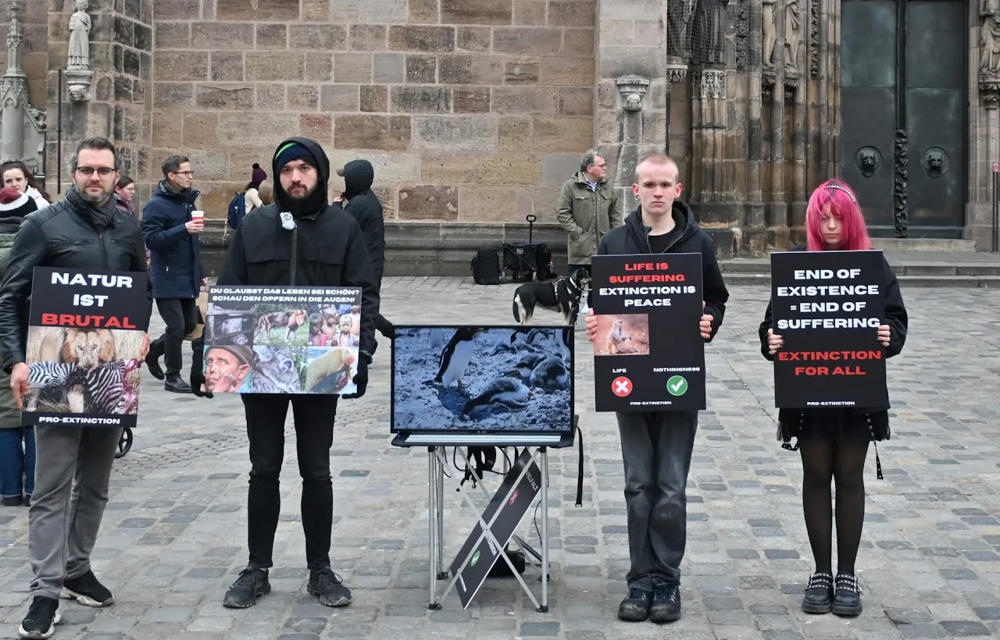
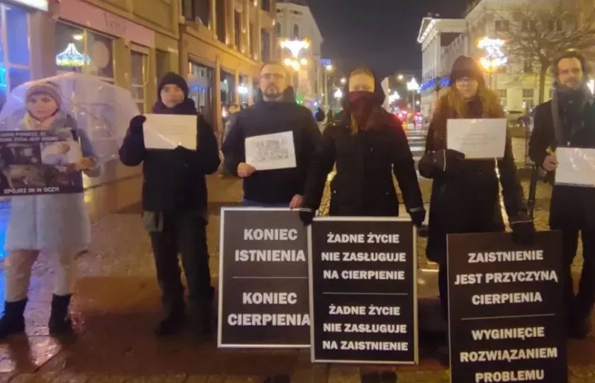
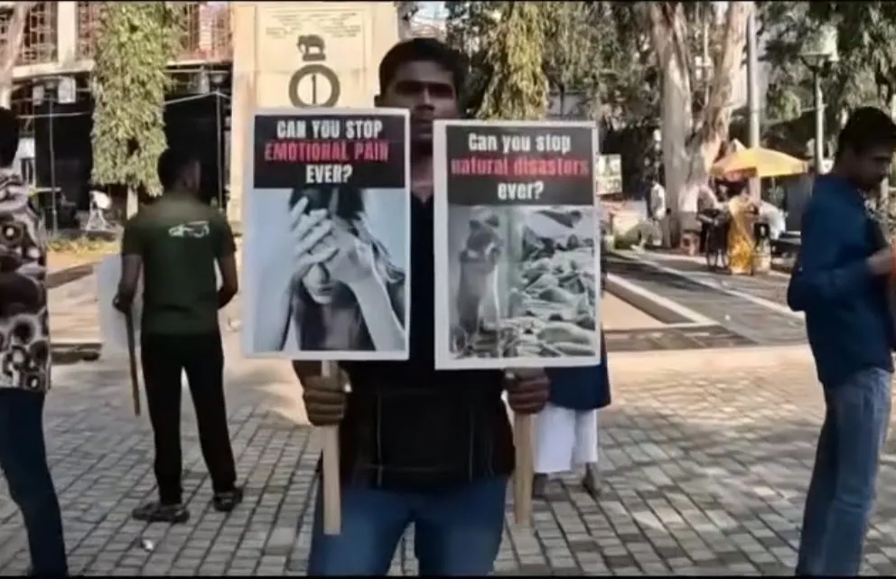

इतिहास
सारी पीड़ा ख़त्म करने का आंदोलन
AI अंग्रेज़ी से मशीन अनुवाद (AI)।
संक्षिप्त इतिहास
संगठन 2024 में शुरू हुआ और तब से तेज़ी से बढ़ रहा है। हमारे पास है:
आने वाले प्रदर्शन
WROCŁAW (व्रोत्सवाफ़)
11.09.2026
- 14:55–16:00Pilłsudskiego 105 / Dworzec Główny
- 16:05–17:45Piłsudskiego 56 / Pomnik Anonimowego Przechodnia / Arkady
- 18:00–22:00Rynek / Sukiennice
12.09.2026
- 17:00–21:40Rynek / Sukiennice
13.09.2026
- 16:40–21:40Rynek / Sukiennice
आज हम कहाँ हैं
2026 तक, हमारा सामाजिक-वैज्ञानिक न्याय आंदोलन बढ़ रहा है, जिसमें बेहद समर्पित और स्वतंत्र एक्टिविस्ट हैं। हमारे लाइव YouTube पॉडकास्ट के 30 से ज़्यादा एपिसोड हो चुके हैं। हमने कई जानी-मानी हस्तियों से बहस की है, और हमारे दर्जनों सोशल मीडिया चैनल बढ़ रहे हैं। हमारे पास एक घोषणापत्र, एक लंबा FAQ, एक वेबसाइट, बातचीत के सर्वर और दुनिया भर में कई नियोजित प्रदर्शन हैं। हमारे एक्टिविस्ट समाज के हर हिस्से में अलग-अलग भाषाओं में काम कर रहे हैं।

प्रदर्शन - जर्मनी

प्रदर्शन - पोलैंड

प्रदर्शन - भारत